Season 02 — GROUNDGallery 1All makers →
Anne van Borselen
Anne van Borselen (b. 1937, Surabaya) brings a rare physical dynamism to her work, moving between painting, bronze and ceramic. She divides her life between Amsterdam and Bali, leaving a vivid trail balanced between the figurative and the abstract.
Instagram · Message Anne directly
100% of the sale proceeds go to the maker. Anne van Borselen works independently, without gallery representation.
—Works13 recorded

Oil on canvas · 100 x 120 cm · 2024
€ 6.900,– available
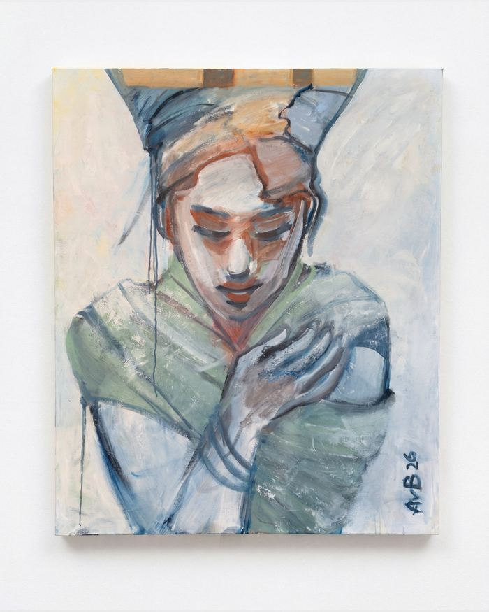
Oil on canvas · 100 x 120 cm · 2026
€ 5.500,– available
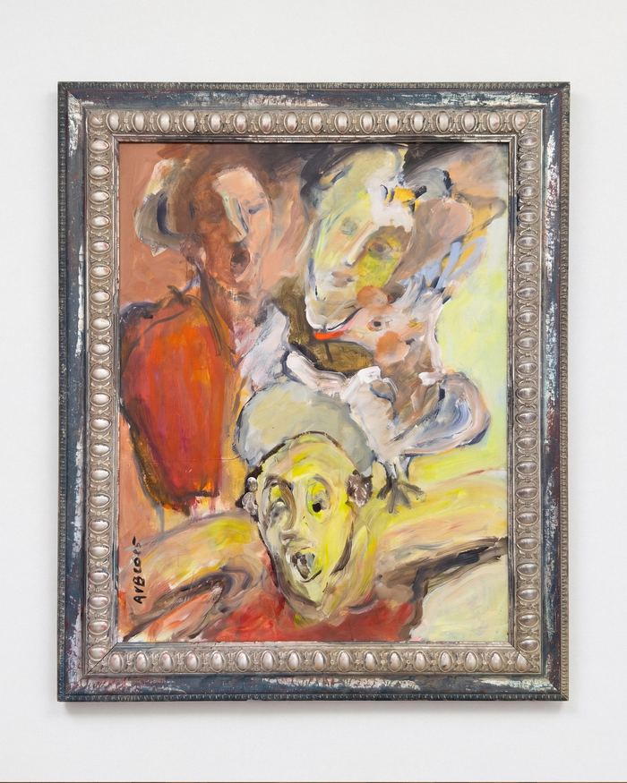
Oil on canvas · 90 x 100 cm
€ 6.900,– available
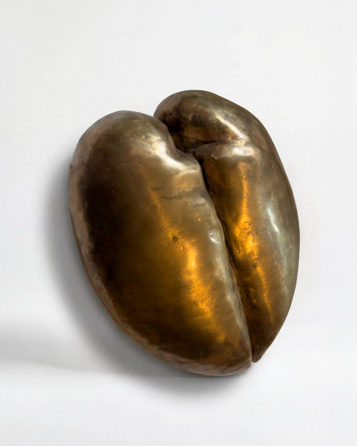
Bronze · ca. 38 x 30 x 10 cm
€ 4.900,– available
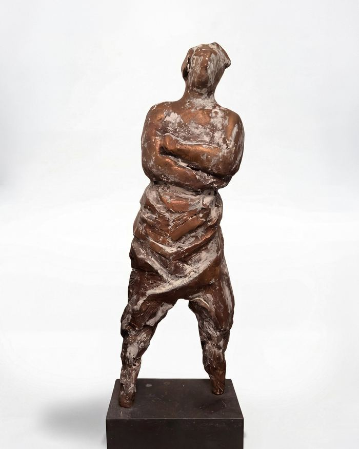
Bronze · ca. 60 cm
€ 5.500,– available
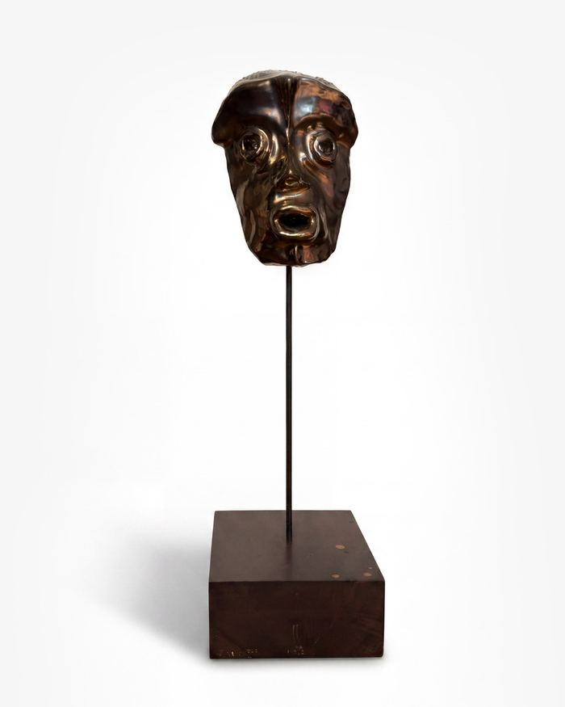
Ceramic · ca. 86 x 19 x 23 cm
€ 3.500,– available
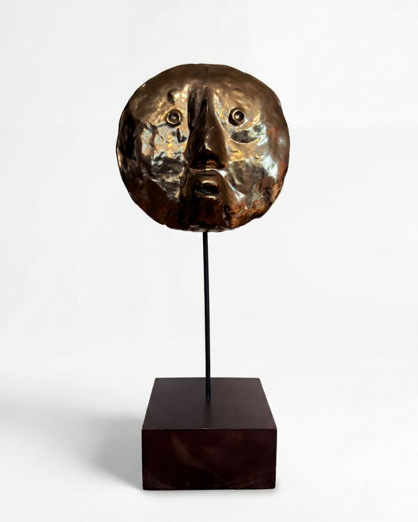
Ceramic · ca. 64 x 19 x 22 cm
€ 3.500,– available
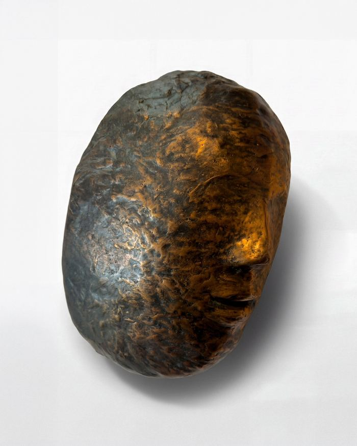
Bronze · ca. 28 x 22 x 10 cm
€ 4.900,– available
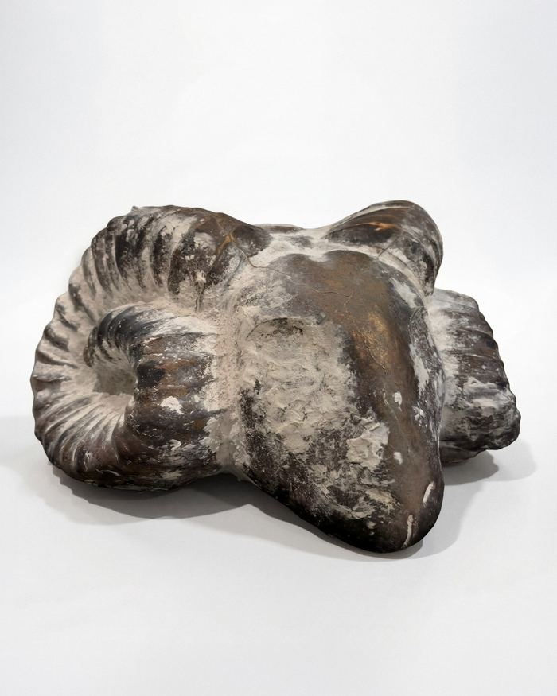
Bronze · ca. 35 x 30 x 50 cm
€ 6.900,– available
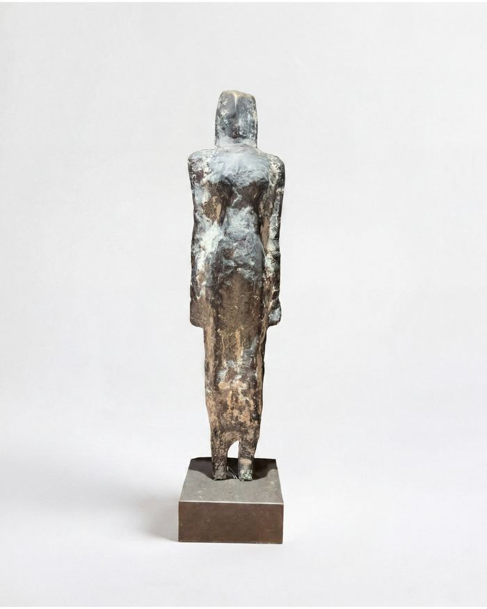
Bronze · ca. 60 cm
€ 5.500,– available
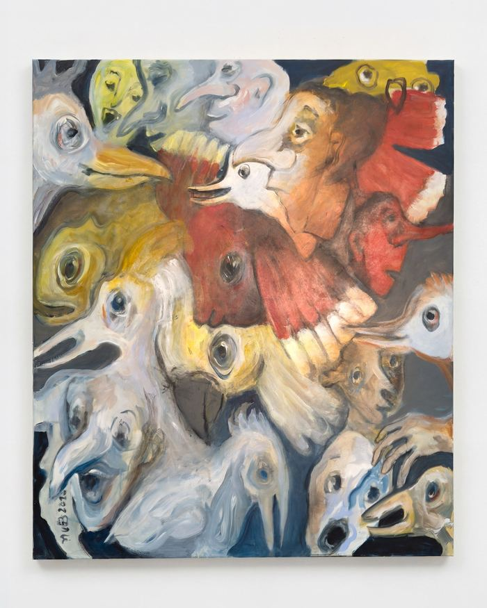
Oil on canvas · 110 x 130 cm
€ 5.500,– available
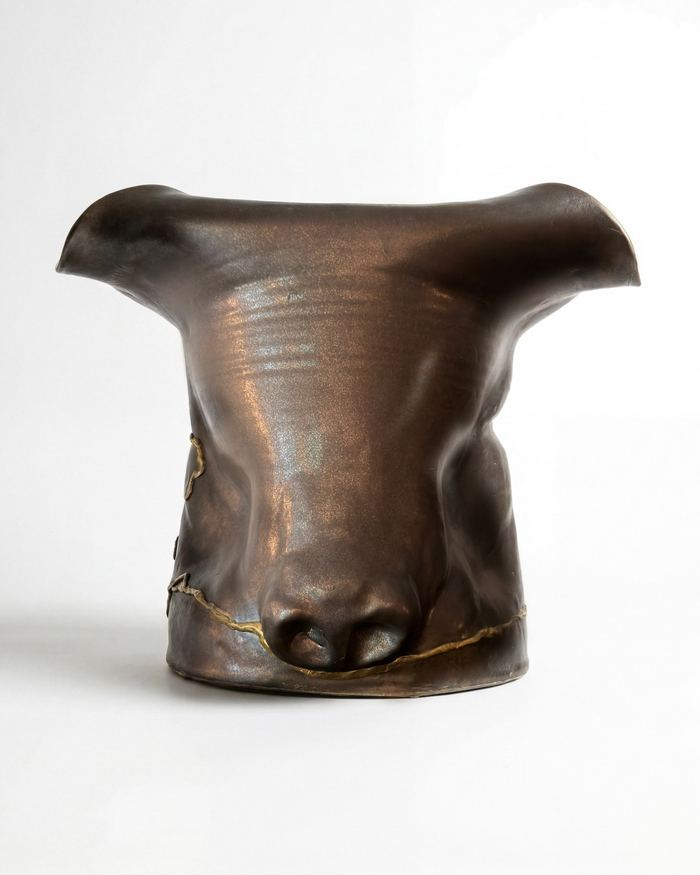
Ceramic · ca. 30 x 25 cm
€ 4.500,– available
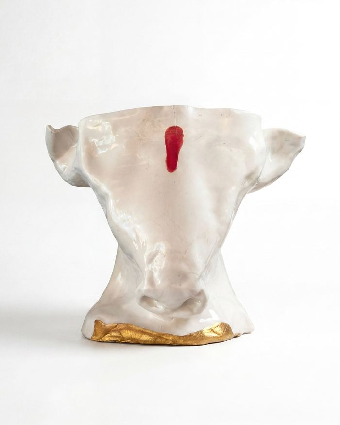
Ceramic · ca. 30 x 25 cm
€ 4.500,– available